要件定義 · 7 / 34
関連システムとシステム連携
テンプレートと参考例の閲覧ページです。実案件への適用時は案内・空欄を埋め、参考例を除去してください。Markdown版の項目・記入例を省略せず収録しています。
この文書の記入例を見る ↓ — 架空の社内経費精算システムを題材にした具体例です。
関連システムとシステム連携
1. 概要
この文書で扱う関連システムと連携の範囲、目的、前提を記載する。
2. 関連システム
接続有無にかかわらず、業務やデータへ関係するシステムと役割を記載する。
| システム | 役割 | 本システムとの関係 |
|---|---|---|
3. システム間の関係
システムと情報の流れを、文章または図で示す。
4. システム連携
連携ごとの方向、情報、タイミング、方式を一覧化する。
| ID | 連携 | 方向 | 情報 | タイミング | 方式 |
|---|---|---|---|---|---|
| IF-001 |
IF-001 連携名
一つのIDに一つの連携を記載し、正常系・異常系・検証方法まで具体化する。
- 目的:
- 連携元:
- 連携先:
- 連携する情報:
- タイミング:
- 方式:
- 認証・認可:
- エラー時の扱い:
- 上位要求:
- 検証方法:
5. 未確定事項
詳細は appendices/open-issues.md を正本とし、重要項目を参照する。
記入例（参考・成果物には含めない）
以下は記入の粒度を確認するための例であり、上のテンプレートへそのまま転記しない。
記入例を表示
架空の「社内経費精算システム」を題材に、対応するテンプレートの全項目を示す。例の固有名詞、数値、日付、方式、判断を実案件へ転用しない。
06-related-systems-and-integrations.md
---
title: 関連システムとシステム連携
status: draft
owner: 開発責任者
reviewers:
- 情報システム部責任者
- 経理システム担当者
last_updated: 2026-08-30
---
関連システムとシステム連携
1. 概要
経費精算システムは、社内認証基盤、人事システム、メール配信サービス、 会計システムと連携する。本書では各システムの役割と授受する情報を定義する。
2. 関連システム
| システム | 役割 | 本システムとの関係 |
|---|---|---|
| 社内認証基盤 | 利用者の本人確認 | ログイン時に認証を依頼する |
| 人事システム | 従業員・組織情報の管理 | 従業員、部署、上長を受け取る |
| メール配信サービス | メールの配信 | 承認依頼と結果の通知を依頼する |
| 会計システム | 会計処理と振込 | 承認済み経費のCSVを渡す |
3. システム間の関係

Mermaidソース
flowchart LR
User[利用者] -->|申請・承認| Expense[経費精算システム]
Expense -->|認証要求| Auth[社内認証基盤]
HR[人事システム] -->|従業員・組織情報| Expense
Expense -->|通知依頼| Mail[メール配信サービス]
Expense -->|承認済み経費データ| Accounting[会計システム]
4. システム連携
| ID | 連携 | 方向 | 情報 | タイミング | 方式 |
|---|---|---|---|---|---|
| IF-001 | 利用者認証 | 双方向 | 利用者識別情報 | ログイン時 | OpenID Connect |
| IF-002 | 組織情報取込 | 人事→経費 | 従業員、部署、上長 | 1日1回 | CSV |
| IF-003 | メール通知 | 経費→メール | 宛先、通知内容 | 状態変更時 | HTTPS API |
| IF-004 | 会計連携 | 経費→会計 | 承認済み経費 | 経理担当者の操作時 | CSV |
IF-001 利用者認証
- 目的: 社内アカウントで経費精算システムを利用できるようにする。
- 連携元: 経費精算システム
- 連携先: 社内認証基盤
- 連携する情報: 認証要求、従業員ID、氏名、メールアドレス
- タイミング: 利用者がログインするとき。
- 方式: OpenID Connect
- 認証・認可: 認証基盤が発行したトークンを検証し、業務権限は本システムで判定する。
- エラー時の扱い: ログインを完了せず、再試行方法と問い合わせ先を表示する。
- 上位要求: FR-001、FR-003、CON-002
- 検証方法: 認証基盤の検証環境を用いた正常・異常系連携試験
5. 未確定事項
- ISSUE-005: 人事システムから受け取るCSVの項目と再送手順
- ISSUE-009: 会計システムの税区分コード
- ISSUE-013: メール配信失敗時の再送回数
詳細は appendices/open-issues.md を参照する。